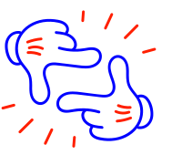
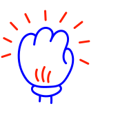
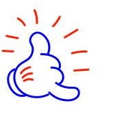
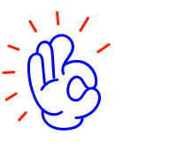

I'm Kirill. I make things for people, by people.
I write, like… obsessively, about everything and anything. I build the systems that turn that writing — and other people's — into shippable work.
If it's useful or interesting, it ends up here. This is a sanctum free from the algorithm, slop, politics or any other bullshit. Just pure vibes.

01Your whitespace is safe with me.
Content strategy without filler. I plan, write and ghostwrite — and I cut anything that doesn't earn its column-inch.

02Strong, reliable end-products.
Pipelines, plugins, tools. Built end-to-end, with a human at the bottleneck where it counts and not where it doesn't.

03Easy communication.
First-person, plain, calm. No hype, no exclamation marks. You always know what you're getting and when.

04Problems solved, not punted.
If something is broken, I'd rather sit with it for a week and ship the right fix than patch around it forever.